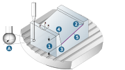

Contours
Select contour
|
Contour: Select an edge (1) or two points (2) that are to be used for probing. The direction of the contour determines the sequence of the probing process. The start point, end point and direction of the contour defined in this way are displayed as graphical feedback. Select Reverse to reverse the direction of the contour. |

First point / Second point / Mode
The X, Y, Z coordinates of the start point/end point of the contour or the first point/second point are displayed under Point position.
Shift along edge: Define a value for moving the first/second probing point along the edge (3). Positive values result in an inwards movement and negative values result in an outwards movement.
Probing direction (4): The following options are available as the probing direction: Y+, Y-, X+, X-, Z- and Automatic. If you choose the Automatic option, the probing direction will be determined automatically by hyperMILL.
Offset: (5) Only available for Z-.
 |
Compensated rotary axis: Define the compensation rotary axis, if required. Using the Automatic option, it is accurately determined by default during the postprocessor run.
Measuring depth
|
The Measuring depth (1) is the depth of the contact point of the touch probe and workpiece. It corresponds to the coordinate of the ball center in the axis of the touch probe (A) and is defined as Top of edge (2), Bottom of edge (3) or as an absolute value relative to the job frame with Absolute (jobframe) (4). Selected contour (5). |

|  |